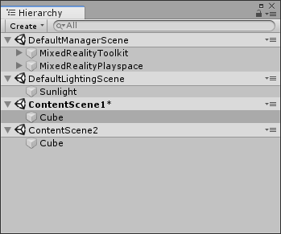
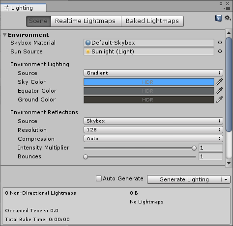
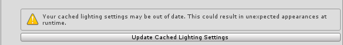
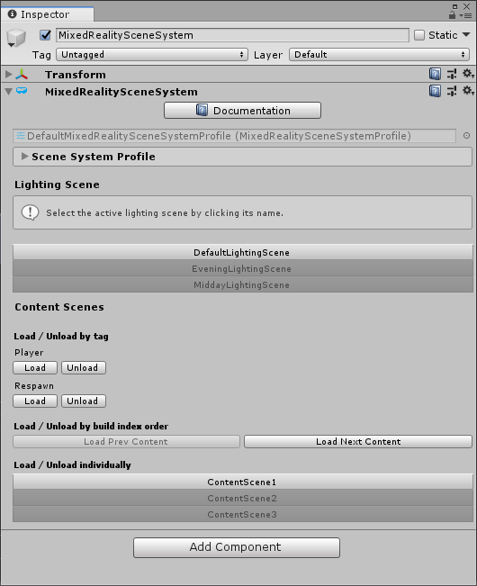

场景类型 Scene Types
场景分为三种类型，每种类型具有不同的功能。

内容场景 Content Scenes
这些是您习惯处理的场景。任何类型的内容都可以存储在其中，并且可以以任何组合的方式加载或卸载它们。
默认情况下启用内容场景。您配置文件的Content Scenes数组中包含的任何场景都可以由服务加载/卸载。
Manager 场景 Manager scenes
它是具有所需的MixedRealityToolkit实例的单个场景。该场景将在启动时首先加载，并在应用程序的生命周期内保持加载状态。Manager场景还可以托管其他不应破坏的对象。这是DontDestroyOnLoad的首选替代方法。
要启用此功能，请在配置文件中选中Use Manager Scene，然后将场景对象拖到Manager Scene字段中。
照明场景 Lighting Scenes
一组场景，用于存储照明信息和照明对象。一次只能加载一个，并且可以在加载过程中混合它们的设置以实现平滑的灯光过渡。
使用相加性加载时，Unity的照明设置(lighting settings)-环境光，天空盒等-可能很难管理，因为它们绑定到单个场景，并且覆盖行为并不简单。在实践中，当资源是在运行时无法获得的光照条件下创建时，这可能会造成混乱。

Scene System使用光照场景来确保这些设置在编辑模式和播放模式下均保持一致，无论加载或激活了哪些场景。
要启用此功能，请在配置文件中选中Use Lighting Scene，然后填充Lighting Scenes 数组。
缓存照明设置 Cached Lighting Settings
您的配置文件存储照明场景中保留的照明设置的缓存副本。如果这些设置在您的照明场景中发生更改，则您将需要更新缓存以确保在播放模式下照明按预期显示。当您的配置文件怀疑您的缓存设置已过期时，将显示警告。单击Update Cached Lighting Settings 将加载每个照明场景，提取其设置，然后将其存储在您的配置文件中。

Editor Behavior
使用照明场景的一个好处是知道您的内容在编辑时已正确照明。为此，Scene Service将始终保持加载照明场景，并将该场景的照明设置复制到当前活动场景。*
您可以通过打开场景系统的service inspector.来更改加载哪个照明场景。在编辑模式下，您可以在照明场景之间即时转换。在播放模式下，您可以预览转场。

*注意：通常，活动场景会在编辑器中确定您的照明设置。但是，我们选择不使用此功能来强制照明设置，因为默认情况下，活动场景也是新创建的对象所在的位置，并且照明场景仅允许包含照明组件。相反，当前照明场景的设置会自动复制到活动场景的设置中。请记住，这将导致内容场景的照明设置被覆盖。